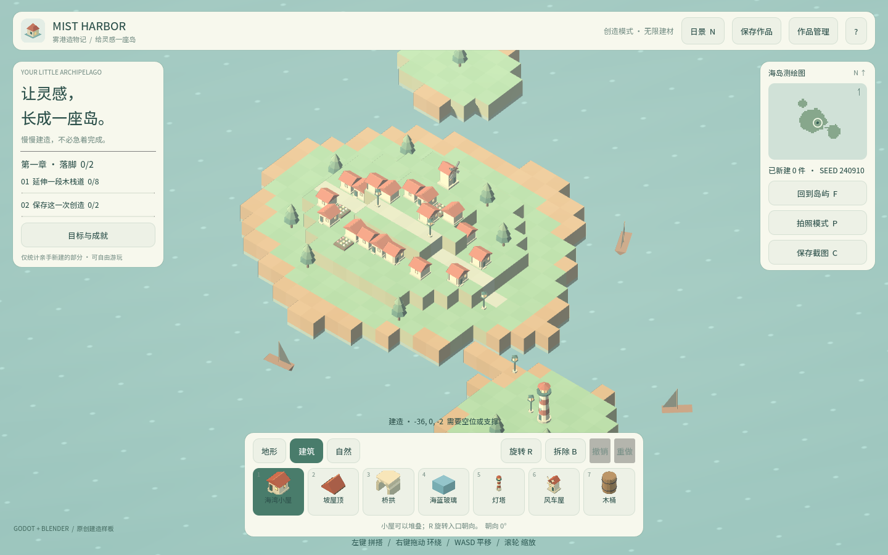
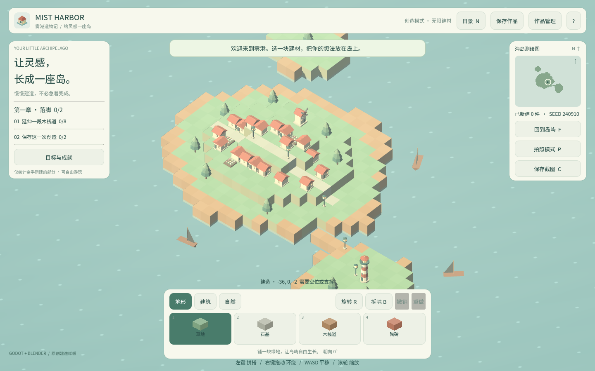
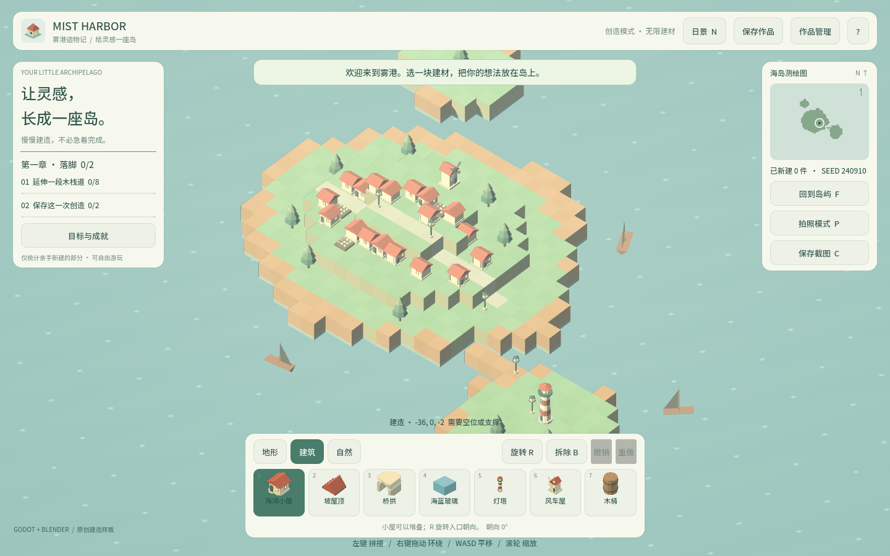

卷 0 · 第 04 章 工程骨架：什么东西住在哪里
本章目标：拿到仓库不再迷路——能说清每个目录的职责、哪些文件会进导出包、
本机配置与工程配置怎么分，以及tools/dev.py这张"一键地图"上都有什么。
对应任务：T04 / T33 | 对应提交：c461437（基线）、3f69241（导出目录移出工程）
4.1 三层目录：工程 / 工具 / 教程
Mist_Harbor/
├─ project/ 游戏工程本体（Godot 打开的就是它）
├─ tools/ 配套工具脚本（Python，全部只依赖标准库）
├─ course/ 本实训（md 设计稿 + site/ 成品 HTML + media/ 素材）
├─ build/ Web 导出产物（不入库）
├─ build-win/ Windows 导出产物（不入库）
└─ logs/ 各命令的运行日志（不入库）为什么导出目录要在工程之外？ 因为 Godot 会把工程目录里的东西当资源扫描。
曾经 project/build/ 里的 index.png 被当成资源导入，每次启动多一轮扫描，还在.godot 里留下垃圾缓存。移到仓库根之后，启动日志里这类扫描就消失了。
📌 判定口诀：凡是"生成出来的"，都不要放在 Godot 工程目录里。
4.2 project/ 内部地图
| 路径 | 内容 | 会进包吗 |
|---|---|---|
| --- | --- | --- |
scripts/ | world_model.gd build_world.gd main.gd minimap.gd achievements.gd model_thumbnail.gd | ✅ |
assets/models/ | 9 个 GLB + manifest.json | ✅ |
assets/fonts/ | 子集字体（299KB） | ✅ |
data/ | palette.json objectives.json achievements.json | ✅ |
docs/ | 需求与学习指南 | ✅（include_filter 明确列入） |
tests/ | 引擎测试与浏览器验收脚本 | ❌（exclude_filter） |
art/ | Blender 源与建模脚本 | ❌ |
export_presets.cfg | 导出预设（Web + Windows） | ❌（引擎自用） |
导出过滤写在 project/export_presets.cfg：
include_filter="data/*.json,docs/*.md,assets/models/manifest.json"
exclude_filter="art/*,tests/*,build/*"这两个过滤是"包体清单"：加新资源时先问自己——它该进包吗？不该就加进
exclude_filter。
4.3 本机配置 vs 工程配置
| 配置 | 位置 | 入库 | 说明 |
|---|---|---|---|
| --- | --- | --- | --- |
| 引擎/Blender 路径 | .codebuddy/local/tools.json | ❌ | 模板 tools/tools.example.json |
| MCP 地址与令牌 | .codebuddy/local/pilot.json | ❌ | 模板 tools/pilot.example.json |
| MCP 服务器清单 | 用户级 ~/.codebuddy/mcp.json | ❌ | 第 02 章 |
| 引擎版本声明 | project/project.godot | ✅ | config/features |
| 工具链说明 | TOOLCHAIN.md | ✅ | 给人看 |
规则：换台机器就要改的 → 不入库，但必须留 .example 模板并写清改哪里。
4.4 一键地图：tools/dev.py
| 命令 | 作用 |
|---|---|
| --- | --- |
python tools/dev.py test | 第 1/2 层验证：56 条断言 + 12 条场景冒烟 |
python tools/dev.py run | 启动游戏 |
python tools/dev.py editor | 打开编辑器 |
python tools/dev.py import | 无头导入资源 |
python tools/dev.py export-web | Web 导出到 build/ |
python tools/dev.py export-windows | Windows 单文件 exe 到 build-win/ |
python tools/dev.py preview | 本地起静态服务预览 Web 成品 |
python tools/dev.py package | 打包源码/课程种子/Web 三个 zip |
工具脚本（都在 tools/）：
asset_pipeline.py 资产管线：脚本 → 远程 Blender → GLB → 建材表
fetch_templates.py Godot 导出模板分块续传下载（1.2GB，单次会超时）
build_font_corpus.py 字体子集：保基准 + 补缺字（改中文文案后必跑）
course_capture.py 教程配图自动生成（Playwright）
course_build.py 教程 Markdown → HTML 成品站点
course_check.py 教程体检：配图引用 / 拍摄计划 / 字数全部只依赖 Python 标准库（除
course_*在无 markdown 库时用内置转换器）。
这是有意的设计：学员 clone 下来就能跑，不需要先配环境。
🌩 在云端 agent（web-cb）里是什么样
| 🖥 本地路线 | 🌩 云端 agent（web-cb） | |
|---|---|---|
| --- | --- | --- |
| 仓库 | 自己 git clone | 平台按 PBL 项目预建，目录结构与本地完全一致 |
tools/dev.py 命令 | 本地终端执行 | 平台内执行，命令与参数相同 |
| 导出产物 | build/ build-win/（本地磁盘） | 平台工作区；下载或预览入口由平台提供 |
| 本机配置（路径/令牌） | 自己维护 .codebuddy/local/*.json | 平台托管，学员不接触 |
| 预览 | dev.py preview 起本地服务 | 平台预览入口，底层同源 |
一致性是本实训的刻意设计：目录、命令、脚本在两边完全一样，
所以你在本地学到的每一步，到云端都能原样复用；反过来也成立。
🌩 唯一需要适应的差别：成品去哪了。本地在你磁盘的
build/，云端在平台工作区——
找产物时先问平台"导出目录在哪"，再对照 4.1 的目录表。
4.5 常见坑速查（本章）
| 现象 | 原因 | 处理 |
|---|---|---|
| --- | --- | --- |
启动日志里出现 index.png 扫描 | 导出产物在工程目录内 | 导出目录移到仓库根（T33） |
改了 data/ 但游戏里没变 | 未重新导出/未重跑导入 | dev.py import 或重新导出 |
| 包体莫名变大 | 不该进包的文件没排除 | 检查 exclude_filter |
dev.py 报找不到引擎 | tools.json 路径不对 | 改文件，或用 --godot 覆盖 |
| 中文显示方框 | 子集字体缺字 | 跑 build_font_corpus.py（T28） |
4.6 本章作业
- 不看文档，默写一遍
project/下六个目录的职责，然后对照 4.2 表打分 - 打开
export_presets.cfg，说出哪两类文件不会进包，以及为什么 - 跑一次
python tools/dev.py package，看看打出来的三个 zip 各自装了什么 - 在
TOOLCHAIN.md里补一条你自己的"换机器清单"（至少 3 项）
🎓 教学提示（给教师 / 直播主）
- 概念锚点：仓库是"工厂平面图"。先认路，再开工。
- 课堂演示：现场打开
export_presets.cfg的 include/exclude，问学生"tests 会进包吗"，
多数人会答错——这是讲"包体清单"的好切入点。
- 常见误解：学生以为"目录里的文件都会进游戏"。用 4.2 表逐行确认。
- 分层教学：零基础班只要求 4.1 与 4.4；进阶班要求解释"为什么导出目录必须在工程外"。
- 批改要点：作业 2 必须同时答出
tests/与art/（或build/*），只答一个给一半分。
🖼 本章图集



📹 录屏分镜（9 分钟）
| 时间 | 画面 | 解说词要点 |
|---|---|---|
| --- | --- | --- |
| 00:00–01:20 | 资源管理器里展开三层目录 | "工程、工具、教程，各住各的。" |
| 01:20–03:00 | 讲导出目录为什么在工程外（对比日志） | "生成出来的，别放工程里。" |
| 03:00–05:00 | project/ 内部逐个目录 + 进包与否 | "这张表就是包体清单。" |
| 05:00–06:30 | tools/dev.py 命令逐个演示 | "一张地图走完全程。" |
| 06:30–08:00 | 云端/本地对照 | "两边命令一样，只是产物位置不同。" |
| 08:00–09:00 | 作业 + 预告（卷 1：设计先行） |
🎬 视频位（待录制）
把录好的视频放到course/media/video/04/（mp4 / webm / mov），重新执行 python tools/course_build.py 即会自动内嵌；首帧默认用本章第一张截图作为封面。分镜脚本见上一节。🖼 配图清单
| 文件名 | 内容 | 生成方式 |
|---|---|---|
| --- | --- | --- |
04-game-ready.png | 工程跑起来后的画面 | python tools/course_capture.py --chapter 04 |
04-dock-terrain.png | 地形分类建材栏 | 同上 |
04-dock-building-beacon.png | 建筑分类选中灯塔 | 同上 |
🎥 直播脚本（L2 片段，12 分钟）
- 开场提问："
tests/目录会打进游戏包吗？"——投票，再揭答案 - 演示：改一次
exclude_filter，重新导出，对比包体大小 - 互动：让观众报出自己工程里"最占空间的文件"
- 收尾：强调"目录即契约"
❓ 本章 FAQ
Q：为什么 docs/ 要进包？
A：它是给玩家/学员看的说明（需求与学习指南），由 include_filter 显式列入。
Q：云端仓库的目录会和本地一模一样吗？
A：会。这是刻意的——同一套命令在两边都能跑，学员不用来回适应。
Q：我可以把工具脚本写在 project/ 里吗？
A：不建议。project/ 是 Godot 工程，Python 工具放 tools/，避免被当成资源扫描。